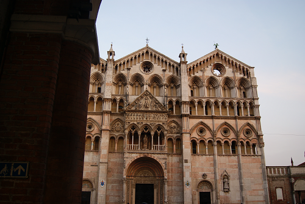
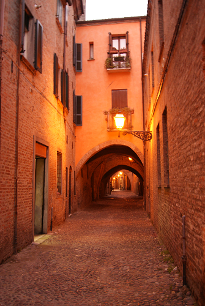
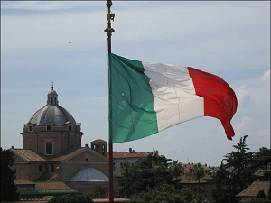

Erasmus Italia
A propos
Bienvenue !
Je m'appelle Marine et j'ai effectué mon semestre d'échange à l'étranger en Italie du nord.
Cette expérience m'a permis de découvrir ce pays et en particulier cette région nord dans laquelle j'ai eu la chance de voyager. Venise, Florence, Vérone ou encore le lac de Garde ont fait parti de mes destinations. J'ai eu envie de partager cela et sen particulier aux étudiants envisageants de partir en Italie pour leur semestre Erasmus ! J'espère que ces informations seront utiles et vous donneront envie de venir dans mon second pays !
Conseils voyages
Ferrare

Ferrare
J’ai eu la chance, lors de mon semestre en Erasmus, de pouvoir voyager à ma guise et de découvrir des villes (dont parfois je n’avais jamais entendu parler, soyons francs) principalement en Italie du Nord. Vous cherchez à sortir des sentiers battus ? Ou juste à découvrir ce pays ? Alors voici quelques villes que je vous conseille et des endroits bien sympathiques !
Je ne peux commencer sans vous parler de la ville dans laquelle j’ai fait mon Erasmus : Ferrare. Je n’avais jamais entendu parler de cette dernière avant de m’inscrire dans leur université, je ne savais même pas où elle se situais sur une carte. Et puis j’ai fait des recherches (quand on va passer 4 mois dans une ville, mieux vaut éviter d’y arriver les mains dans les poches quand même !). Alors j’ai demandé à mes amis Google et Wikipédia de m’en dire plus sur cette petite ville d’Emilie-Romagne. Tout d’abord, j’ai appris que la ville « intramuros » (au sens propre, la ville est réellement entourée de murs) était classée au patrimoine mondial de l’Unesco. Pour moi qui aime l’art, c’était déjà un bon point ! J’ai ensuite appris qu’une grande famille avait dirigé la ville (Les Estes pour les curieux), en avait fait un centre artistique (ils ont fait venir des artistes, des poètes, des peintres,…), et ont construits un château (fallait bien loger tout ce beau monde !) avant de la laisser à l’abandon avec l’arrivée de la peste. L’histoire c’est bien mais dans le présent, il y a quoi de spécial à Ferrare ? Certes les parties en dehors des murs, ne sont pas les plus belles (j’avoue avoir trouvé cela « moche » en arrivant…) mais une fois arrivée au cœur de la ville, mon impression était tout autre ! Oui, il s’agit d’une petite ville (un peu plus de 100 000 habitants) mais il y a tellement de choses à voir ! Une bonne dizaine de musées, un château, plusieurs parcs,… Mais la ville est surtout connue pour ses rues en arcades (ancien guetto juif de la ville), qui lui donne tout son cachet et son originalité. J’ai passé des après-midis entières à me balader, à profiter du charme de la ville (et de ses glaces, oui j’avoue !) et de sa tranquillité de vivre ! Cette ville est pour moi un concentré de Dolce Vità !
Je ne peux que vous conseiller d’aller dans cette ville, beaucoup moins touristique que Bologne ou Venise et où vous pouvez passer une journée pour profiter de l’Italie et de sa douceur de vivre.
Erasmus en Italie
Voici quelques conseils pour toi, l’étudiant qui envisage de partir en Italie, et qui cherche sur les forums des retours d’expériences afin de préparer au mieux ton voyage ! Je préfère le dire dès le début : si c’était à refaire, je n’hésiterais pas une seconde ! J’ai Adoré mon séjour et j’envisage de m’installer plus ou moins définitivement en Italie, c’est dire ! Un premier conseil : venez dans le pays avec des notions (et plus si possible) d’Italien. Ce n’est pas qu’un cliché, les italiens ne maitrisent pas forcément l’anglais et encore moins le français ! Alors je vous conseille de travailler cette langue et de vous sentir un minimum à l’aise avec afin que votre arrivée se passe le mieux possible. J’ai par exemple du faire une partie de mon inscription, durant ma toute première semaine donc, en italien. Je suis partie avec un niveau A1-A2 (je n’avais fait qu’un an et demi d’italien) et je dois l’avouer, j’ai parfois eu du mal ! Mais j’ai pris des cours sur place, je me suis mis en colocation avec d’autres italiens et au bout de mon semestre j’étais autonome en italien, arrivant à avoir des conversations et à suivre correctement mes cours ! Je suis à présent B2 dans cette langue et surtout très fière d’avoir autant progressé ! Si vous êtes motivé, tout est possible ! Je tiens aussi à vous préciser que les examens étaient pour la plupart oraux (j’étais en M1 en Italie) que ce soit dans mes cours en italien comme en anglais. L’ESN : c’est une association que l’on retrouve dans la plupart des villes étudiantes et qui organise les sorties, soirées,… elle permet de rencontrer les étudiants qui partageront votre semestre ! Pour ma part, l’ESN aidait aussi à la recherche de logement, en cas de besoin ! Les cours : j’avais pour ma part 5 cours de chacun 6h par semaine pour avoir les 30 crédits nécessaires dans mon école à la validation de mon année. Et ô bonheur, beaucoup de cours se chevauchaient ! Les horaires sont en général mal faits et il faut souvent négocier avec les professeurs afin de partie plus tôt ou arriver plus tard à leur cours (ils sont en général compréhensifs et acceptent, heureusement !) Les examens : les étudiants sont notés sur 30. La moyenne est de…18 ! La plupart des professeurs sont cléments avec les étudiants étrangers, particulièrement si vous êtes un minimum assidu et impliqué dans les cours (ce qui n’est vraiment pas le cas de la majorité des étudiants erasmus !). Si vous prenez des cours en italien, les professeurs seront attentifs à votre progression et votre envie d’apprendre ! Si vous êtes en échec (moins de 18 donc) ou que votre note ne vous convient pas, vous pouvez repasser jusqu’à 10 fois votre examen final ! Pour ma part un 18 étant suffisant car mes notes ne sont pas prises en compte. Mais pour les étudiants italiens, les notes sont inscrites sur leur diplôme, ils veulent donc tous la meilleure note possible car cela est un critère de recrutement ! Pour vous rassurer je peux vous dire que mes notes ont été de : 18, 24, 25, 27 et même un 28 ! Et ce n’est pas dans les matières où j’ai le plus travaillé que j’ai obtenu les meilleures notes ! Pensez à débloquer votre plafond de carte bleue : Beaucoup de choses se payent en cash en Italie (le loyer par exemple) et le premier mois, je me suis retrouvée sans pouvoir tirer l’argent nécessaire à mon loyer !
Bons plans
Pour manger, il suffit de se rendre dans bar pour prendre un apéritivo. Cette manière de dîner, traditionnelle de l’Italie du Nord (originaire de Milan) est ancrée dans la vie des italiens. Pour le prix de son verre, généralement du Spritz (Cocktail à base de Prosecco qui est un vin italien pétillant), on peut manger à volonté ! Oui, à volonté ! Certains bars en font leur spécialité en proposant un vrai repas avec des pâtes, des pizzas, de la charcuterie, du fromage,… On peut donc tester, gouter, apprécier et se resservir pour un prix inférieur à celui de son cocktail en France. Elle est pas belle la Dolce Vita ? Voyager à l’intérieur de l’Italie c’est bien moins cher qu’en France ! En effet, le marché est ouvert à la concurrence au contraire de notre cher pays ! Cela semble être un détail mais ce n’est pas le cas ! Avec l’arrivée sur le marché d’Italotreno, le concurrent de leader historique Trenitalia, les prix ont un peu baissés pour certains trajets. En effet, Italotreno (le « petit nouveau ») ne possède que peu de lignes mais les prix sont en général bien plus avantageux qu’avec Italotreno ! J’ai voulu passer quelques jours à Milan pour aller voir aussi l’exposition universelle en partant de ma ville de résidence (Ferrare) et cela un bon mois avant la date. En passant par l’entreprise historique, cela me coûtait presque 200€ aller-retour pour 2 personnes. Je me suis dis que comparer les prix serait peut-être utile, j’ai bien fait ! Avec Italotreno, je faisais certes un changement à Bologne mais je n’ai payé que 75€ aller-retour pour 2 aux mêmes dates (ce prix est celui en partance de Bologne, il fallait rajouter les billets Ferrare-Bologne, soit 20€ aller-retour toujours pour 2. Somme totale : environ 90€). Nous avons mis un peu plus de temps mais pour un prix divisé par 2, l’affaire est plus que rentable ! Et les trains sont tout confort, modernes et ça vaut vraiment le coût pour qui veux voyager à petit prix ! Par contre les lignes desservies sont limitées mais ayez le réflexe de faire un petit tour sur leur site lors de vos déplacements en Italie ! N.B : les billets d’Italotreno se réservent principalement en ligne, vous pouvez les imprimer mais aussi les montrer au contrôleur sur votre tablette/smartphone au cas où vous n’auriez pas la possibilité d’imprimer vos billets !